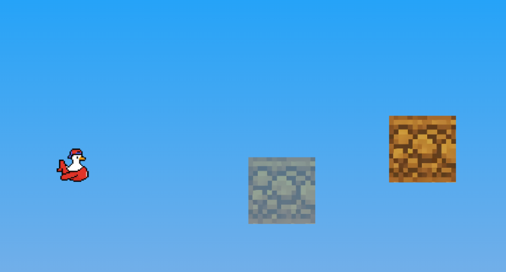
Select an object from the right panel and Left Click anywhere in the level to place it.
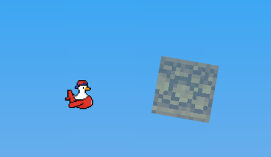
Use Ctrl + Scroll or the Arrow Keys to rotate objects before placing them, or rotate currently selected objects. When multiple objects are selected, this rotates them all as one group. Hold Shift while rotating to rotate each object individually around its own center instead.
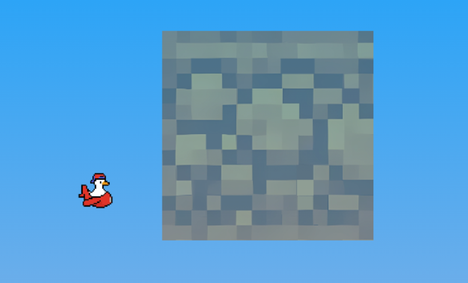
Hold Alt + Scroll to scale objects up or down. This works for your tool preview or selected objects on the canvas. When multiple objects are selected, this scales them as a group. Hold Shift while scrolling to scale each object individually instead.
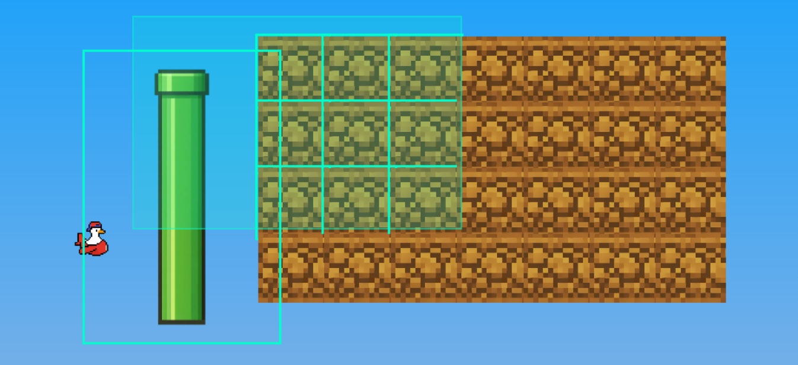
With the default cursor selected, Left Click and drag in an empty area to draw a selection box and highlight multiple objects at once.
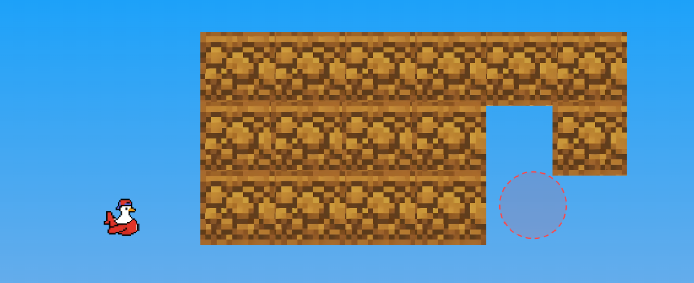
Hold Right Click and drag your mouse to continuously erase objects like a typical eraser brush.
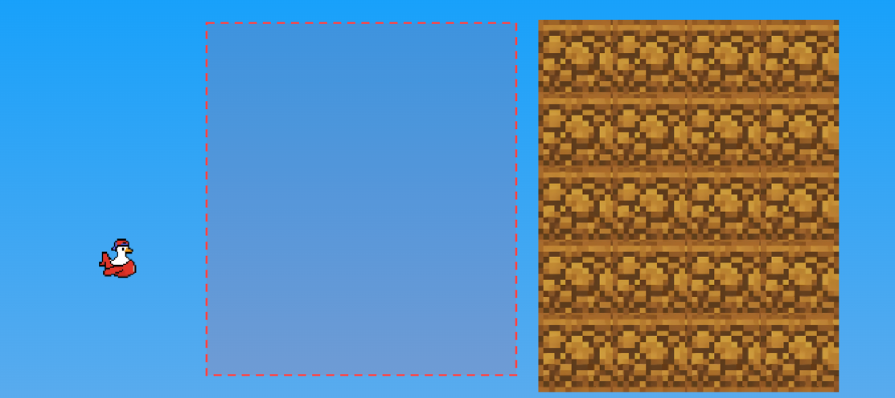
Hold Alt + Right Click and drag to quickly delete all objects inside an expanding rectangular area.
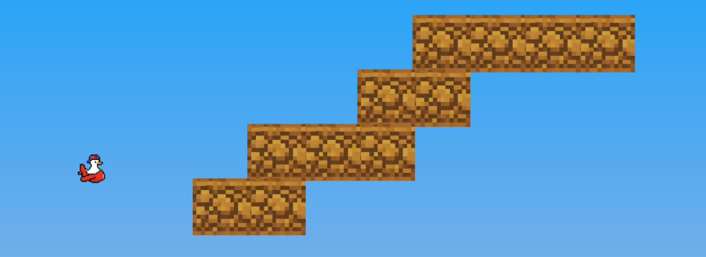
Hold Left Click and drag to tile objects seamlessly in a continuous line. You can also hold Alt while dragging to fill a square block automatically.
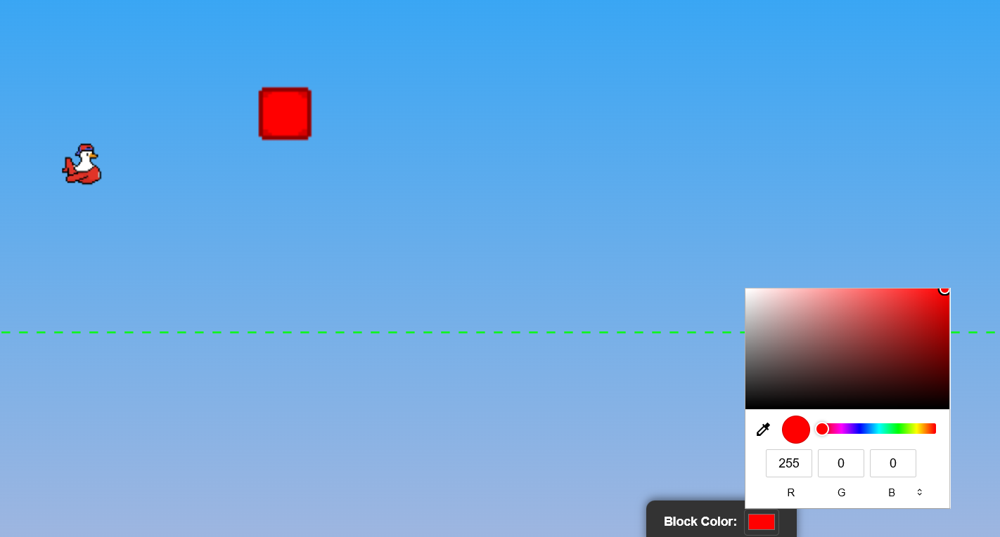
When selecting colorable objects (like certain blocks), open the Properties panel in the bottom to change their color.
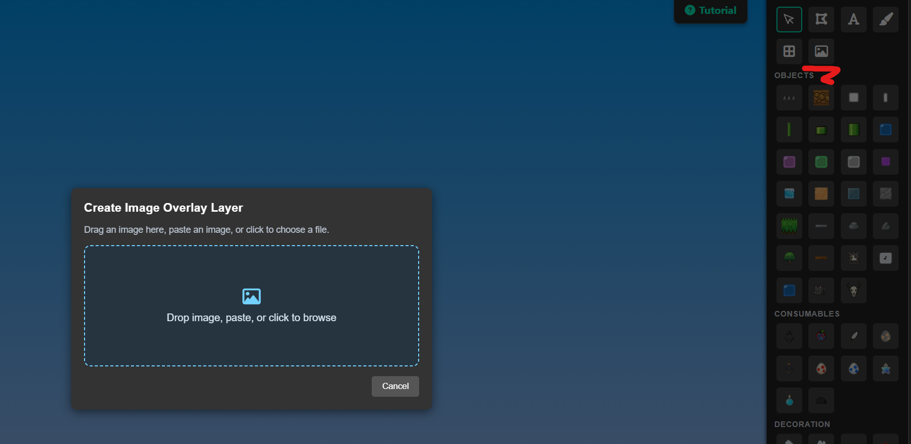
Click the eyedropper icon next to Block Color, then hover and click to pick a color. It can sample from blocks, overlay/reference images, or the background gradient. If multiple things overlap, the top visible layer takes priority. While hovering a reference image, that image becomes fully visible for easier color picking.
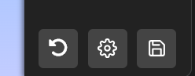
Made a mistake? Click the Undo button at the bottom right or press Ctrl + Z to reverse your last action.
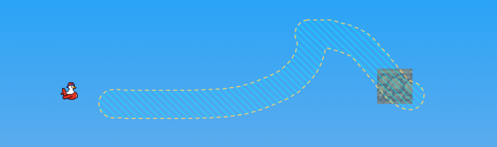
Use the Brush tool to paint custom solid terrain areas freely. Hold Ctrl + Scroll while using the brush to adjust the brush radius.
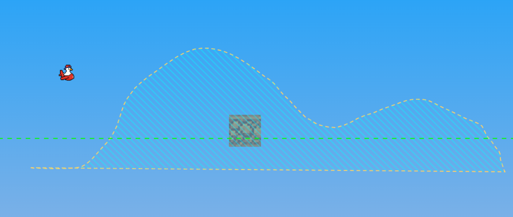
With the Lasso tool, click around to plot out a complex polygon, snapping the shape closed by clicking near the starting point. Then, select any block and click inside the shape to seamlessly fill it!
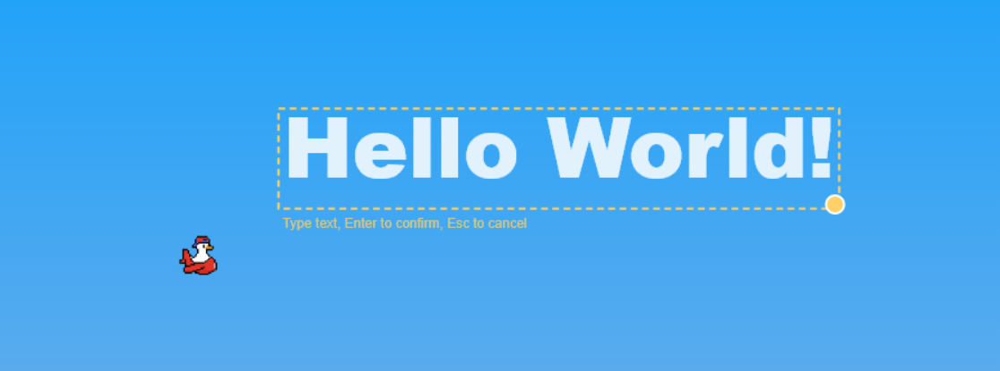
Select the Text tool, click on the canvas, and type your message. Press Enter to convert your text into a selection. Then use an object to fill it! IMPORTANT: Make sure the block you use to fill it is small enough.
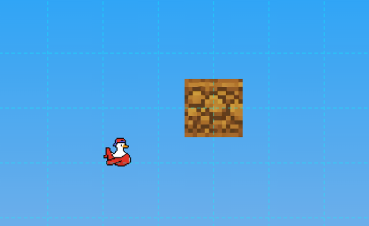
Select the Grid tool and Left Click any placed block to lock the world grid to its position and rotation. Right Click anywhere to clear the active grid.
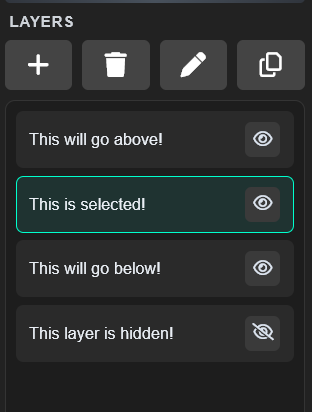
Use the Layers panel on the right to organize your level. Objects in a layer move together and share the same depth. You can add, duplicate, delete, and switch between layers to manage complex designs.
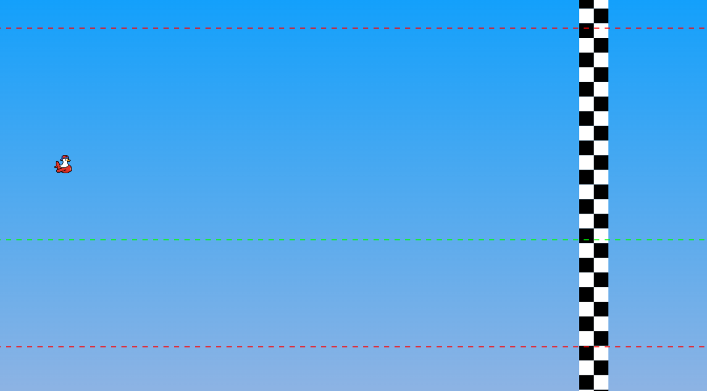
The colored dotted lines visually represent the death barriers for the ceiling and floor. The large checkerboard pattern indicates the Finish Line flag for your level. The green dotted line indicates the floor.
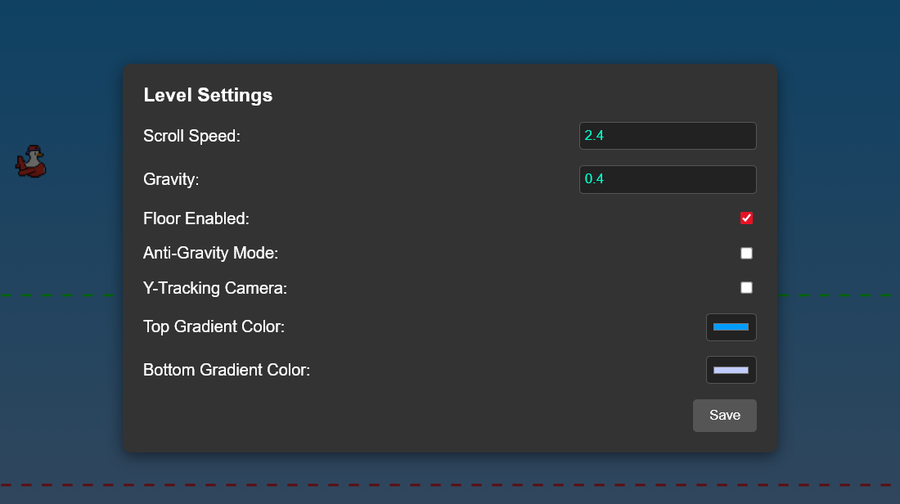
Click the gear icon to modify core level mechanics such as game speed, gravity intensity, background gradients, and camera logic.
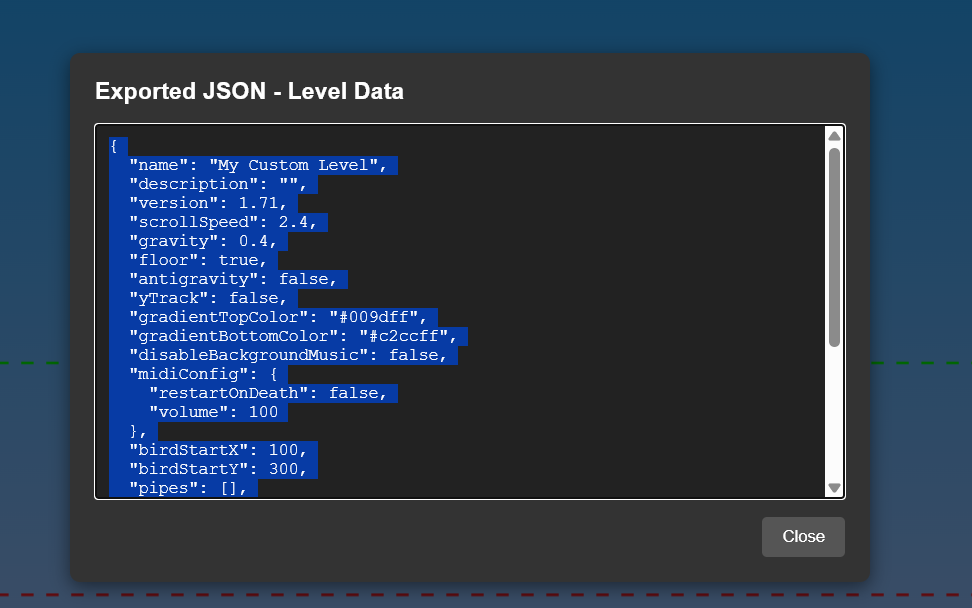
Once your masterpiece is finished, click the Export button. Copy the generated JSON code and paste it into r/honk to play it!